不知不觉，奥运赛程已经过半了。
热搜上，不断涌现中国运动员的夺奖好消息，也把许多选手的精彩幕后故事推向台前：
有人挣脱癌症的阴影杀回体育圈、有人出身小国却三战“世界第一”、有人在赛前自愿向对手暴露弱点……
那些奋力一击的背后，道尽了竞技体育的残酷。
但那些纵情燃烧的激情时刻，因人性闪耀而熠熠生辉。
“他不是奥运会一轮游，
他是他们国家的第一名。”
巴黎奥运会开幕的第二天，羽毛球男单小组赛首场比赛上，出现了“压倒性”一幕。
苏里南选手索伦·奥普蒂以5：21、7：21的比分，不敌男单头号种子选手石宇奇。
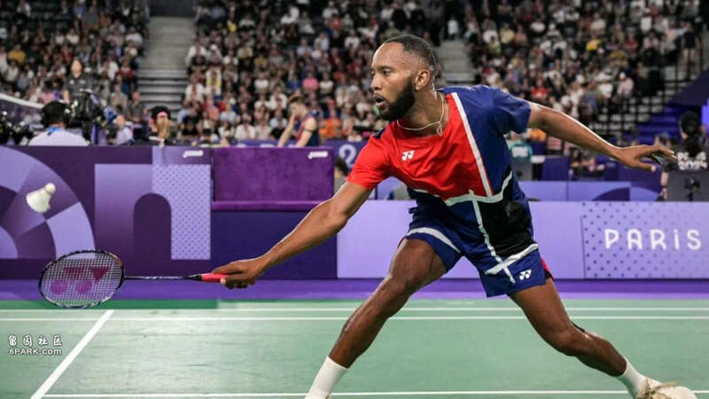
有网友一看赛果，发现索伦的奥运之旅实属“倒霉的12年”：
2016年，19岁的索伦第一次参加奥运会，就在小组赛首场，对上当年的头号种子李宗伟。
他以0：2的成绩输给强敌，最终遗憾出局。
5年后，索伦再战东京奥运会，没想到又在小组赛首场抽中劲敌石宇奇。
由于索伦得了新冠上不了场，最后只能遗憾退赛。
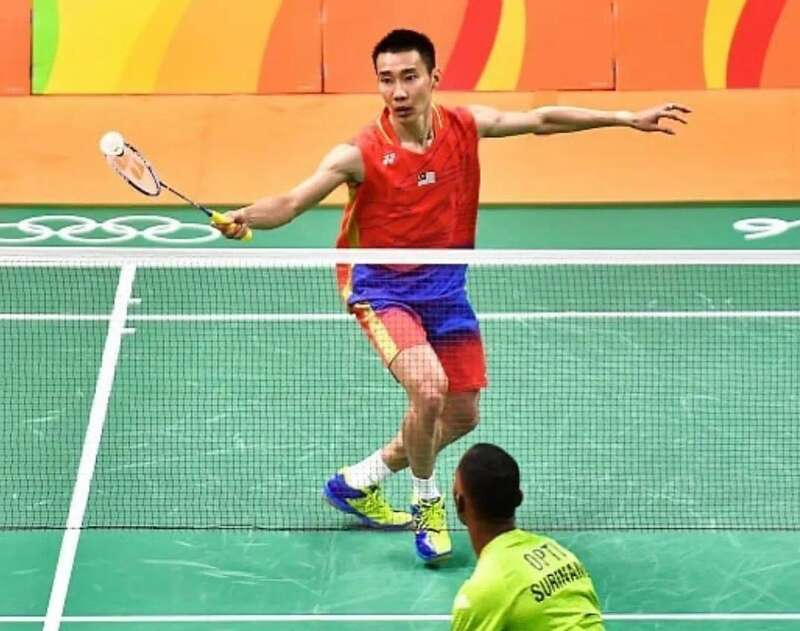
再加上巴黎奥运又双叒在首场遭遇“世界第一”，“点背”的索伦，很快被网友调侃为“一轮游”选手。
然而当真正看完他的比赛之后，更多人收起了“乐子心”，发自内心地敬佩这位竭尽全力的运动员。
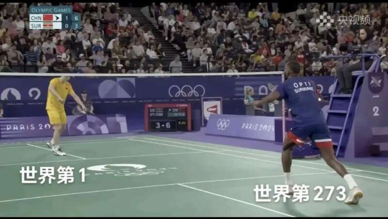
索伦·奥普蒂，来自一个对许多人来说十分陌生的国家——苏里南。
这是一个位于南美洲北部的小国，国土面积只有16.4万平方公里，跟我们江西省差不多大。
他们的羽毛球运动水平不强，索伦平时练习都经常找不到合适的球场和陪练。
没有人给他喂球，他就专注地练步法、跑步，以及去健身房训练。
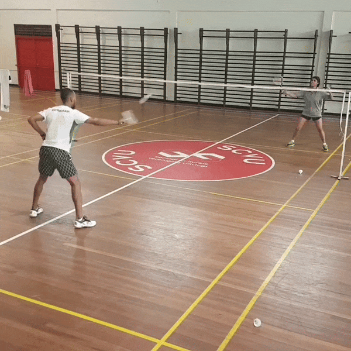
“质朴”的训练条件，并没有让索伦心生怯意。
他常说：“我的目标不仅是赢得比赛，更是要证明即使来自一个小国，只要有梦想并且为之努力，就能在世界的舞台上发光发热。”
于锲而不舍的努力下，索伦真的做到了连续6年拿下苏里南全国男单冠军，并逐步在国际舞台上崭露头角。
他一拍又一拍地为自己打出了名次，也为祖国苏里南打进了奥运。
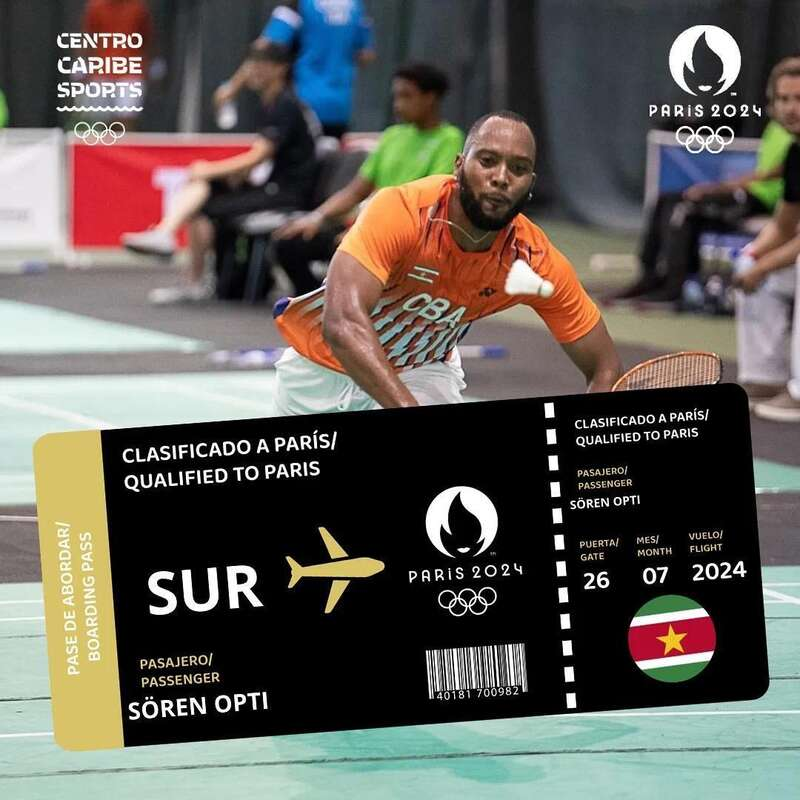
对上明知不敌的“世界第一”，索伦拼劲全力，不留遗憾。
他的拼搏，绽放成一场场酣畅淋漓的比赛。

赛后他可以自豪地说：
“我有几分打得很不错，在某些时刻给了石宇奇足够压力，我对自己的表现很满意，这些都是很宝贵的经验。”
离场前，交锋的两人，向彼此致以最真心的敬意。
那一刻，竞技场上不止胜负，还有志同道合与互相尊重。
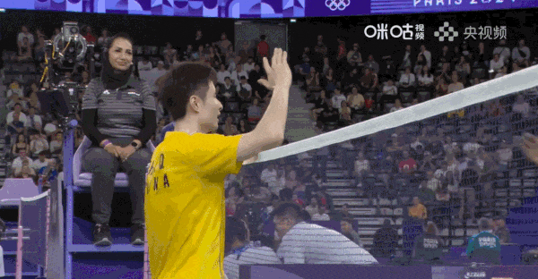
“只要池江出现在泳池里，
就是一个奇迹，
她对任何人都是一个激励。”
在索伦pk石宇奇当天，巴黎奥运的另一处场地在举行女子100米蝶泳比赛。
日本名将池江璃花子，以57秒79的成绩位列半决赛第12名，无缘决赛。
她在场地一角力竭坐下，掩面大哭，怀疑自己的努力是不是没有意义。
忽然，另一名她国选手朝角落走去，温柔地拥住崩溃的池江。
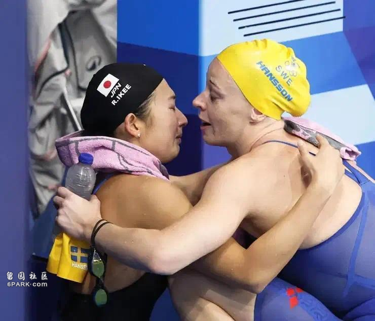
出生于00年的池江璃花子，可以说是为泳坛而生的天才。
她3岁开始游泳，13岁拿全国冠军，隔年开始刷新日本比赛记录。
18岁那年，池江第一次参加亚运会，就成为了首位在一届亚运会上摘得6金的游泳选手，被评为“最有价值运动员”（MVP）。
她的对手张雨霏，也就是当年的100米蝶泳银牌得主，都称这“6金”为“神迹”。
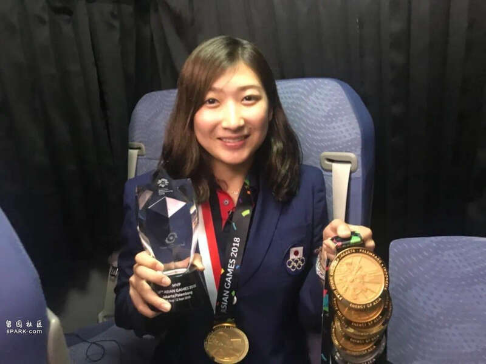
就在众人以为，这位“日本美人鱼”即将驰骋五大洋之际，
2019年2月，池江被确诊罹患急性淋巴细胞白血病。
一夜之间，池江的目标从“夺冠”变成“活下去”。
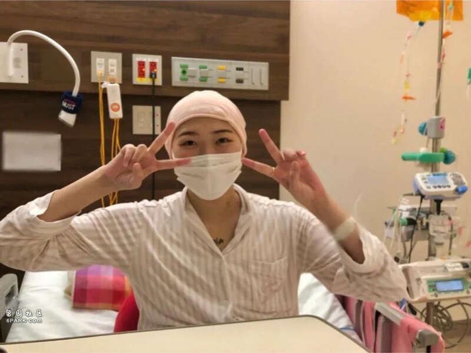
在化疗、放疗期间，她经历了脱发、发烧、暴瘦等痛苦。
身高171cm的池江，从57kg瘦到了42kg，虚弱到一度连走路都觉得困难。
然而，即便身患重病、前路漫漫，池江却从未想过放弃游泳。
她甚至仍然以参加巴黎奥运会并赢得奖牌为方向，在医院坚持不懈地进行着肌肉训练。
抱着强烈的“不想输”的念头，池江在治疗10个月之后，奇迹般出院。
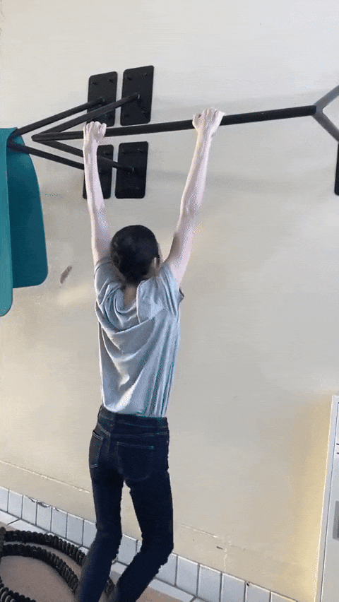
虽然医生告诉她，熬过这五年，病情没有复发才能算完全痊愈，而一旦复发，她就得告别游泳。
但池江没有战战兢兢，而是愈发拼命地增脂增肌，还制定了远超同伴强度的训练计划。
终于，在2020年3月，池江回归泳池。188天后，她重回赛场。
从东京奥运会混合泳接力赛到福冈游泳世锦赛再到杭州亚运会，池江不放弃任何一个比赛的机会。
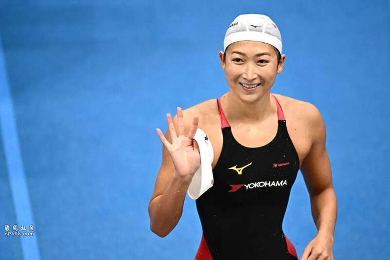
尤其是2023年的亚运会上，她顶着身体不适，拼过一个又一个项目，却始终离奖牌差一点。
当她在赛程最后一天终于站上领奖台时，站在她身边的张雨霏都控制不住地拥抱着池江落泪。
后者在采访中直言：“只要池江出现在泳池里，就是一个奇迹，她对任何人都是一个激励。”
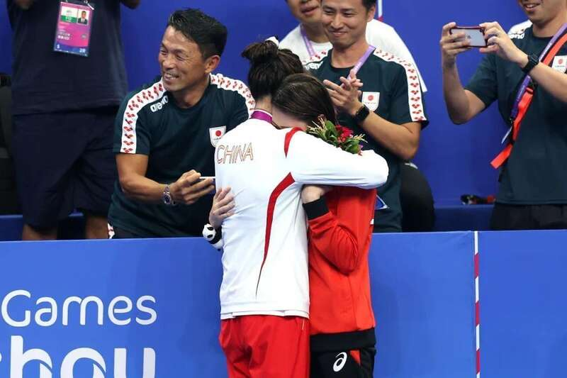
对游泳的热爱和永不言弃的精神，为池江赢得了无数运动健儿的敬意。
即使是争夺同一个冠军的对手，她们也热切地向池江表达敬佩与祝福。
世界纪录保持者Sarah Sjöström，得知池江在与白血病作斗争时，拉着领奖的两位选手一起，在手掌上写下“永不放弃”的鼓励，为池江加油。
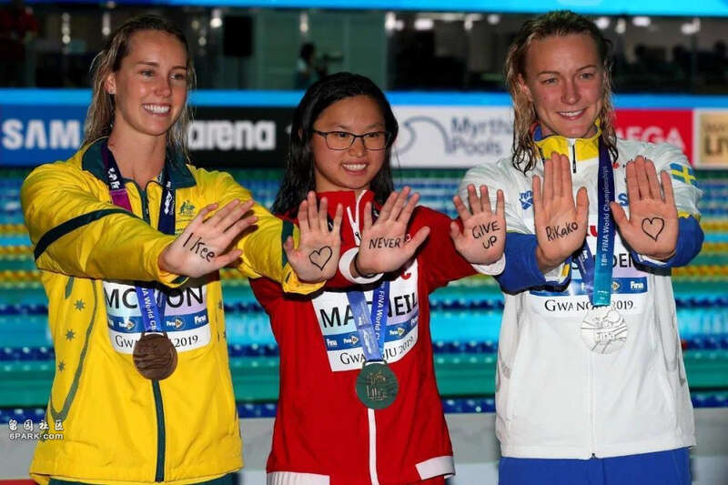
在池江复出后的世锦赛上，张雨霏也在手上写下“做最好的自己”，与对方击掌。
她俩自东京奥运会后每一次相遇，都会约定下一次重逢。
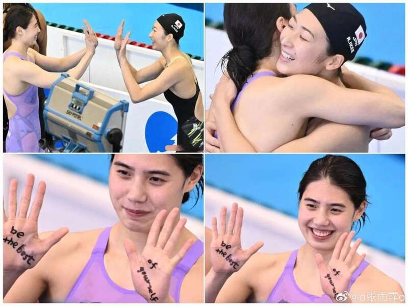
一个人的奋勇拼搏，与选手间的惺惺相惜，成为了赛场上不亚于冠军奖牌的礼赞之花。
而这正是竞技体育的魅力，也是奥林匹克“更高，更快，更强，更团结”的完美诠释。
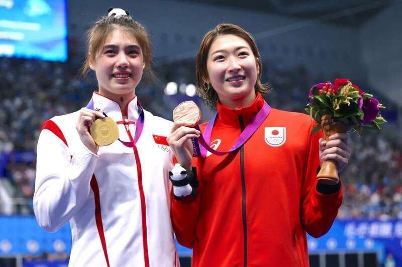
“打败她，用我教过你的。”
“打败我，用我教过你的。”
在竞技体育的世界里，优胜劣汰是永恒主题。
每个选手都顶着来自国家、对手、舆论和自己给予的压力，去突破人类身体的极限。
有人明知不敌仍竭尽全力；
有人身处险境仍不忘初心。
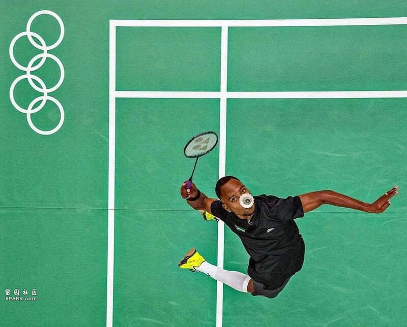
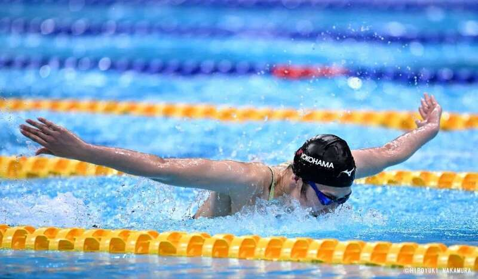
而赛场上闪耀的人性之光，从来不只有个体的热血，还有英雄相惜的友谊——
是池江璃花子患病，却仍在东京奥运会前为手肘受伤的游泳选手Sarah Sjöström加油打气；
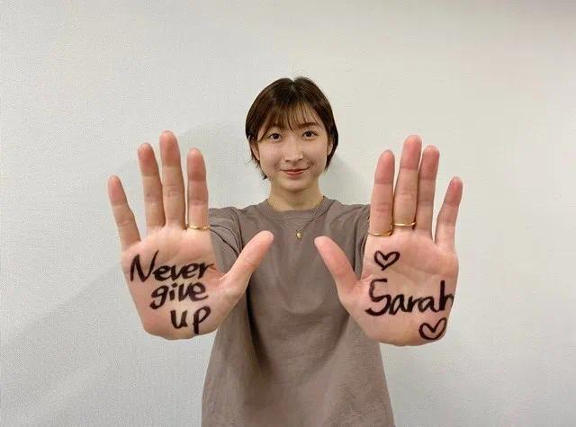
是大运会上，中国羽毛球男单选手王正行，在对手乌干达运动员的球拍坏了又没有备用拍的情况下，主动把自己的备用球拍给对方使用；
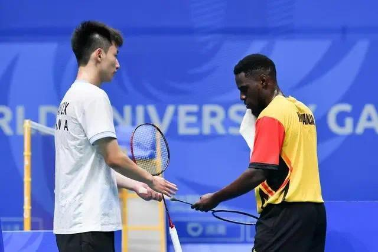
是巴奥乒乓球半决赛结束时，孙颖莎握手前，先关心早田希娜的旧伤伤势；
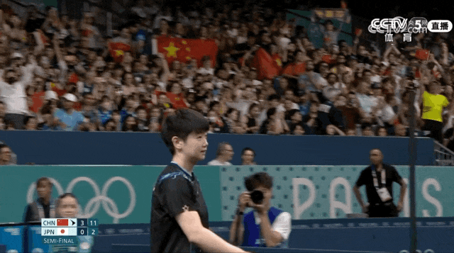
是世界杯上，中国摔跤运动员冯泳欣看到对手因腿伤难以走路，她毫不犹豫地走过去背起对方离开赛垫；

是来自巴西的安德拉德拿下自由体操冠军后，获得亚、季军的美国选手开心地祝贺她得金牌，在领奖台上恭迎她“登基”；

是中国羽毛球运动员何冰娇获得银牌后，在领奖台上拿着西班牙国旗徽章，向伤退的马林致敬；
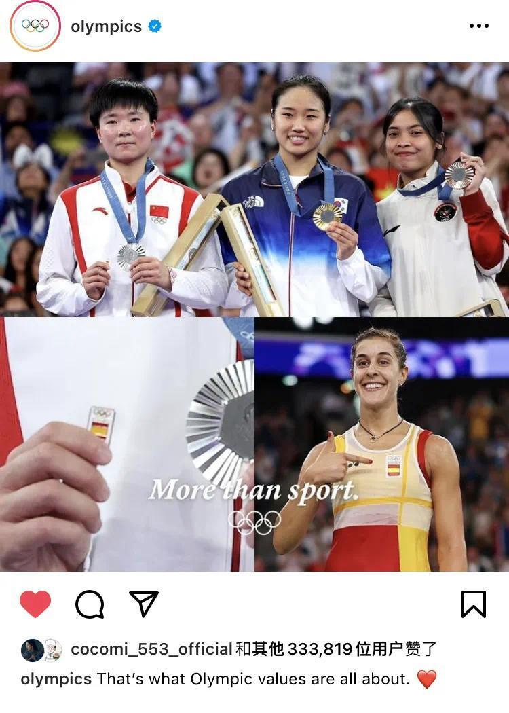
是61岁的世界冠军倪夏莲，为了中国混双能战胜神秘之师朝鲜，甘愿在与孙颖莎的单打对决前，做对方的陪练，把自己的打法交给对方研究……
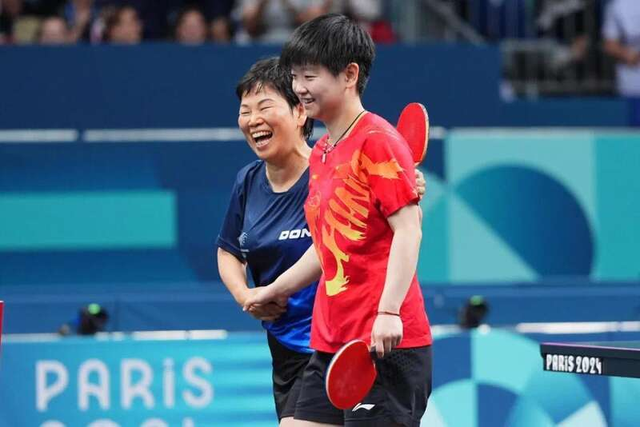
是运动员之间每一句“下个赛场见”的约定，是所有跨越对抗的相互欣赏……
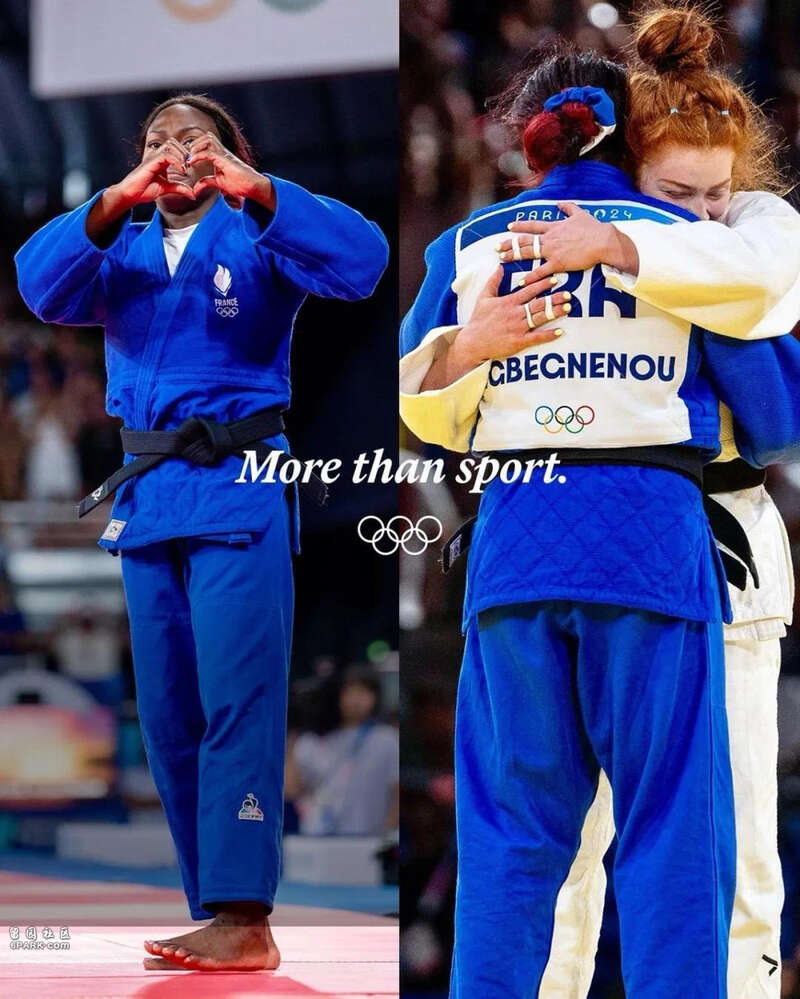
竞技体育的残酷众所周知，感谢有许多人用自己的故事告诉我们：
岁月漫长，热爱可挡；时光艰难，温柔可抗。
竞技世界是因人性伟大而精彩，体育魅力远不止于金牌。
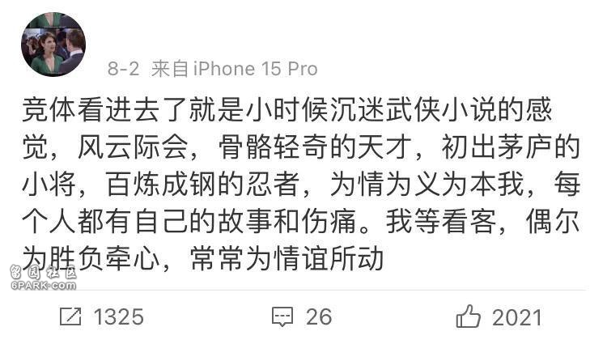